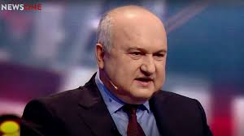

Кандидат у Президенти України Ігор Смешко

підтримка : 6.04%
гор Петро́вич Смешко́ (нар. 17 серпня 1955, Христинівка, Черкаська область) —
український військовий, політичний і державний діяч, очільник Всеукраїнської
громадської організації «Сила і Честь». Голова Комітету з питань розвідки при
Президентові України (з 7 жовтня 2014 року).
Голова Служби безпеки України (4 вересня 2003 — 4 лютого 2005).
З квітня 2014 року — радник Президента України.
Надзвичайний і Повноважний Посол, генерал-лейтенант
(серпень 1998), генерал-полковник (2004), доктор технічних наук,
професор (1992), військовий інженер.